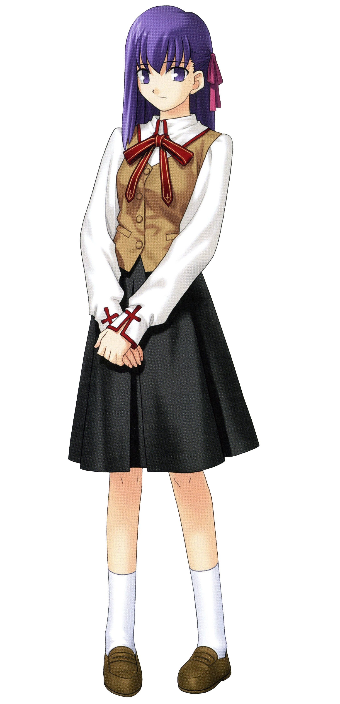
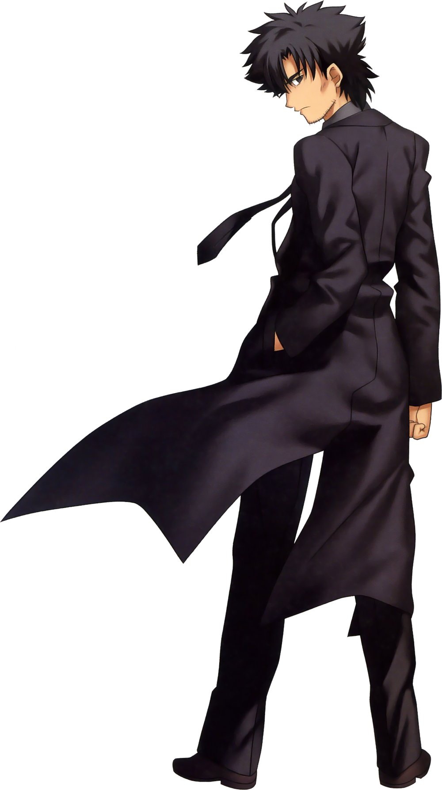
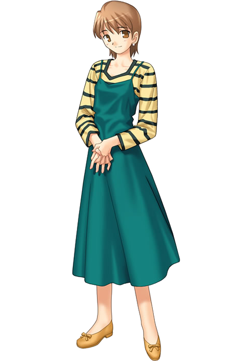

Personnages secondaires de Fate/Stay Night :

Sakura Matō (間桐 桜, Matō Sakura)
Sakura est la sœur de Rin mais, à cause d'une tradition qui veut qu'on ne choisisse qu'un seul héritier pour les pouvoirs magiques de la famille Tōsaka, dut être adoptée par la famille Matō. Une fois là-bas, il est dit qu'elle se faisait abuser par son frère Shoji Matō, et battre par le grand-père de la famille, Zōken Matō.
Sakura est une élève de première année de lycée et la sœur de Shinji Matō. Après la mort de Kiritsugu, Sakura se rend souvent chez lui pour l'aider dans ses tâches quotidiennes. Bien que Shinji appartienne à une famille de sorciers, il affirme qu'elle n'a aucune connaissance des arts ou de l'histoire de sa famille.
Sakura est en apparence timide, mais possède une grande force intérieure.
Elle aime Shirō Emiya depuis longtemps.
Sakura joue un rôle mineur dans les routes Fate et Unlimited Blade Works, où elle n'est qu'une simple kōhai dévouée et toujours présente pour aider Shirō.
Cependant, dans la route Heaven's Feel, elle est l'héroïne principale de l'histoire et son passé y est considérablement développé.
Dans le scénario original de l'anime, Sakura est kidnappée par Caster pour servir de sacrifice afin d'invoquer le Saint-Graal, car elle possède des circuits magiques latents. Lors de la tentative de sauvetage, Rin et elle sont confirmées être des sœurs qui ont été séparées très jeunes.
Source: Wikipedia

Kiritsugu Emiya (衛宮 切嗣, Emiya Kiritsugu)
Le père adoptif de Shirō, un mage qui fut le Master de Saber lors de la quatrième guerre du Saint-Graal, dont les événements sont couverts par Fate/Zero. Au cours de sa vie, Kiritsugu s'efforce d'être un Héros de la Justice, avec l'intention d'utiliser le Saint Graal pour souhaiter la paix dans le monde. Cependant, à la fin de la quatrième guerre du Saint Graal, après s'être rendu compte que le Saint Graal était corrompu et maudit, et que le souhait qu'il accorde ne provoque que la destruction, il s'efforce de détruire le Saint Graal. Il a demandé à son Servant Saber de détruire le Graal, mais a involontairement déclenché le Graal avec de l'énergie qui en jaillit, ce qui a provoqué un énorme incendie et détruit Shinto, un quartier de la ville de Fuyuki où le Graal a été invoqué.
Kiritsugu finit désenchanté lorsqu'il a provoqué l'incendie de Fuyuki avec le pouvoir du Saint-Graal. En trouvant Shirō, Kiritsugu l'a adopté et a passé les dernières années de sa vie à élever l'enfant comme son propre fils avant que son corps ne lui fasse défaut, à la suite d'une malédiction infligée par Angra Mainyu.
Source: Wikipedia

Zōken Matō (間桐 臓硯, Matō Zōken)
Zōken est un puissant mage ancien et le patriarche de la famille Matō. Bien qu'il est âgé de plusieurs centaines d'années, Shinji et Sakura le considèrent comme leur grand-père. Originaire de Russie, son nom d'origine est Makiri Zolgen (マキリ・ゾォルケン, Makiri Zoruken).
Il s'avère être l'un des trois premiers mages à avoir créé le système du Saint-Graal, ainsi que le concepteur des sceaux de commandement15. Au cours de sa longue vie, Zōken a accumulé une énorme richesse de connaissances et d'expérience dans la magie.
Cependant, son entraînement est indissociable de la torture physique et psychologique (un fait exacerbé par le sadisme de Zōken).
Zōken considère son petit-fils, Shinji, comme la disgrâce d'un sorcier et estime que sa petite-fille adoptive, Sakura, a plus de potentiel que son frère.
Il s'est maintenu en vie grâce à l'utilisation de Crest Worms et ne peut être tué que si le ver qu'il a planté dans le cœur de Sakura est détruit.
Il n'apparaît que dans Heaven's Feel, où il est l'antagoniste principal du scénario et joue également un rôle plus important dans le préquel, Fate/Zero. Il contrôlait à l'origine Dark Sakura, mais elle finit par se retourner contre lui et détruit son corps, le réduisant à un seul ver. Après avoir vu Illya dans sa Dress of Heaven et se rappelant pourquoi il s'est battu pour survivre si longtemps, il est parvenu à cesser de s'accrocher à la vie et de mourir en paix.
Source: Wikipedia

Fujimura Taiga (藤村 大河, Fujimura Taiga)
Taiga Fujimura est enseignante d'anglais à l'Académie Homurahara, l'école de Shirō, dont elle est la professeure principale de sa classe et la superviseure du club de tir à l'arc. Elle est largement appelée Tiger (タイガー, Taigā) par ses élèves, un surnom qu'elle déteste, mais Shirō l'appelle Fuji-nee (藤ねえ, litt. « Grande sœur Fuji »).
Après la mort de Kiritsugu, Taiga devient la tutrice de Shirō et vit avec lui depuis plusieurs années. Taiga et Shirō sont très proches, et elle le considère comme son petit frère.
Taiga est constamment montrée comme l'une des personnes les plus importantes dans la vie de Shirō et celui-ci sera vraiment en colère quand elle est menacée. Elle est également une escrimeuse qualifiée, brandissant un shinai connu sous le nom de Tora-Shinai (虎竹刀?) dont il est dit avec plaisanterie qu'il a absorbé tant de soif de sang qu'il est devenu un objet maudit de haut niveau. Elle a un grand-père nommé Raiga.
Source: Wikipedia